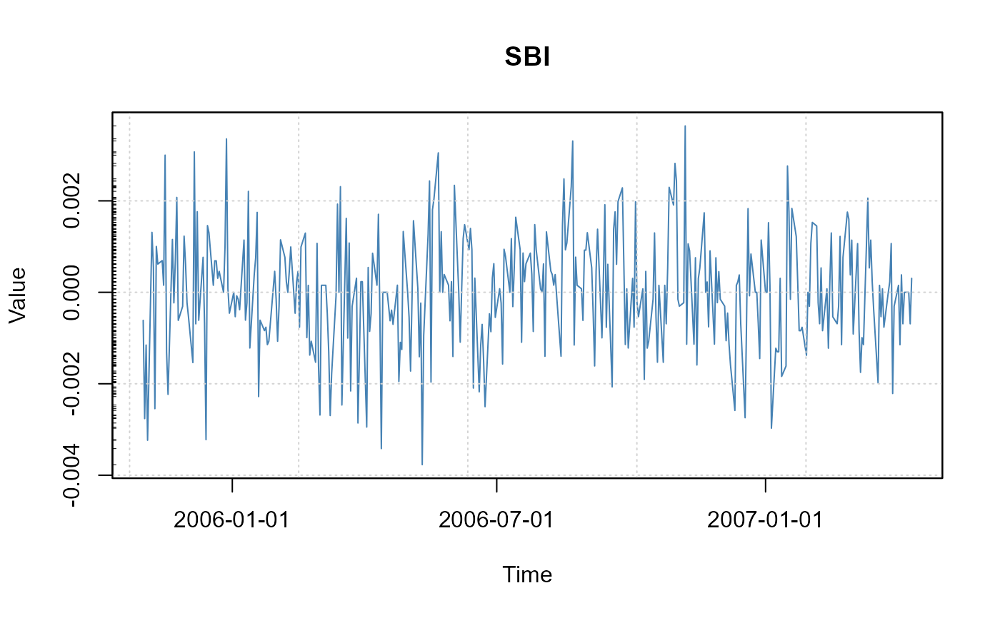
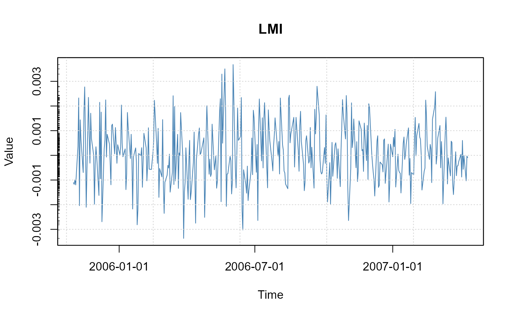
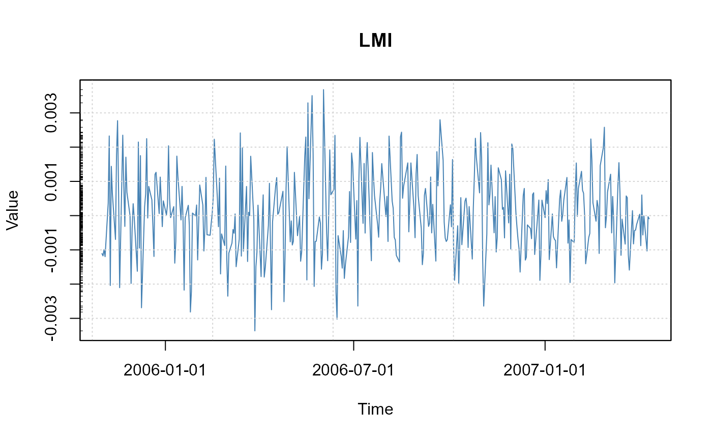
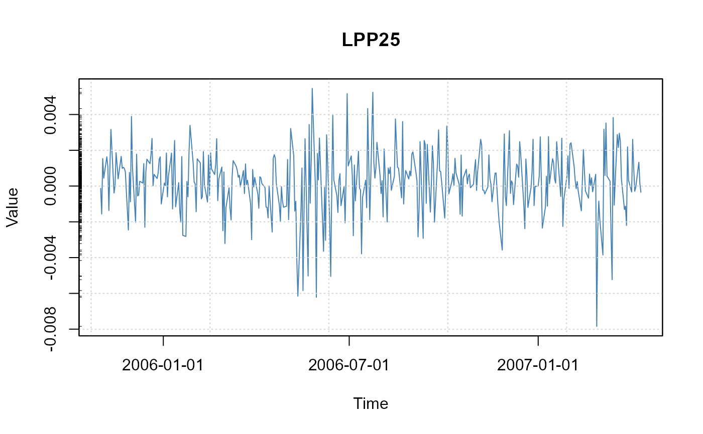
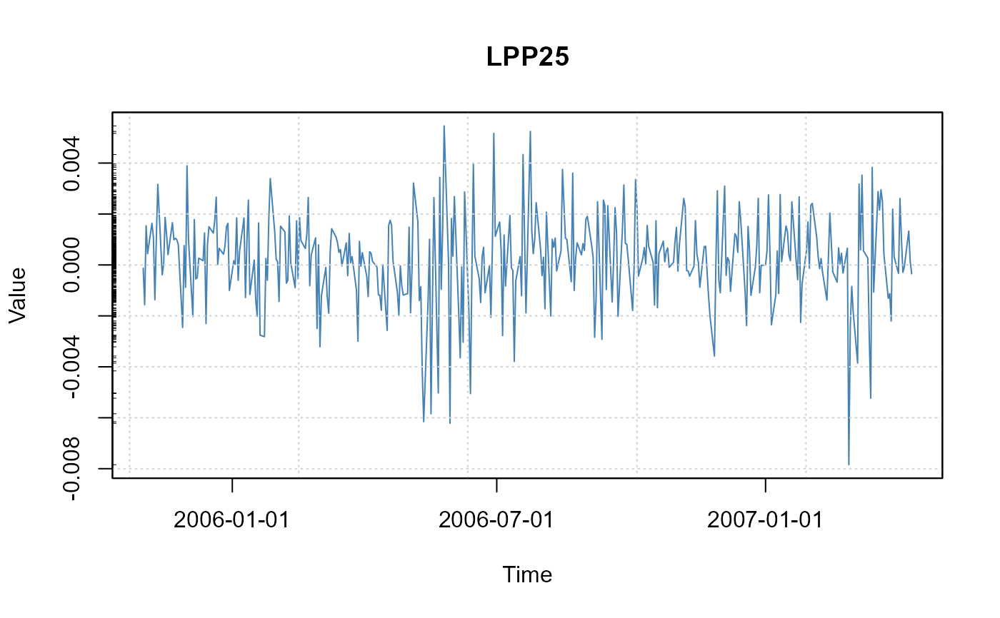
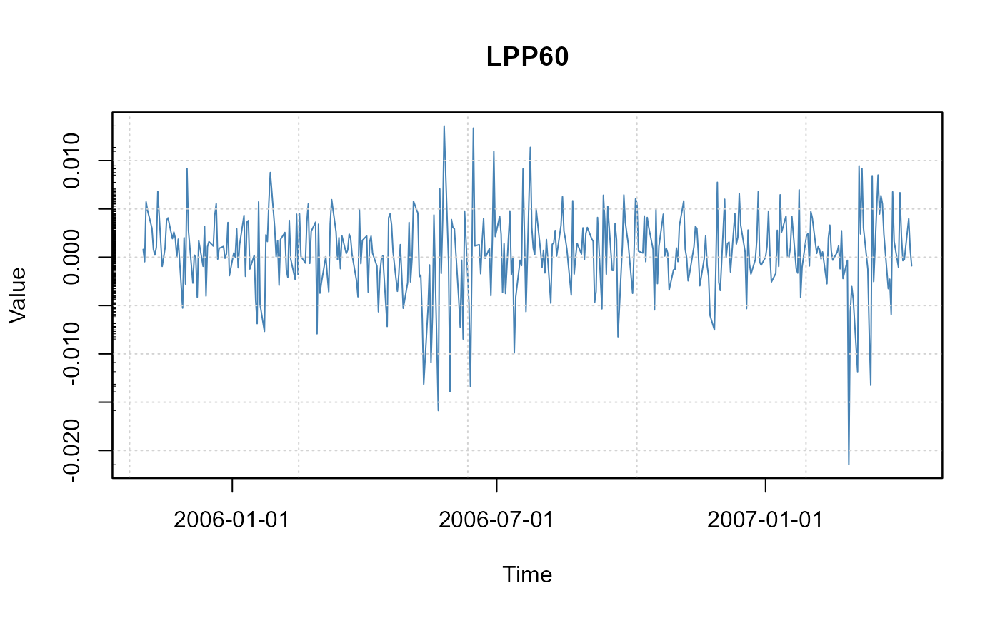
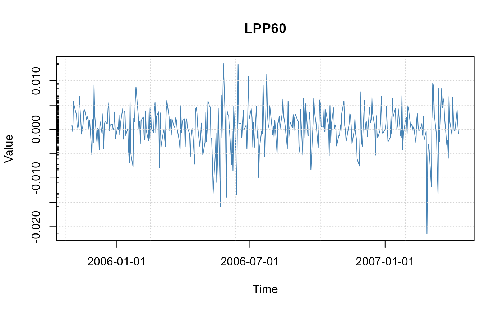

Financial Time Series Plots
plot-seriesPlot.RdReturns an index/price, a return, or a
drawdown plot.
List of Functions:
seriesPlot | Returns a tailored return series plot, |
cumulatedPlot | Displays a cumulated series given the returns, |
returnPlot | Displays returns given the cumulated series, |
drawdownPlot | Displays drawdowns given the return series. |
seriesPlot(x, labels = TRUE, type = "l", col = "steelblue",
title = TRUE, grid = TRUE, box = TRUE, rug = TRUE, ...)
cumulatedPlot(x, index = 100, labels = TRUE, type = "l", col = "steelblue",
title = TRUE, grid = TRUE, box = TRUE, rug = TRUE, ...)
returnPlot(x, labels = TRUE, type = "l", col = "steelblue",
title = TRUE, grid = TRUE, box = TRUE, rug = TRUE, ...)
drawdownPlot(x, labels = TRUE, type = "l", col = "steelblue",
title = TRUE, grid = TRUE, box = TRUE, rug = TRUE, ...)Arguments
- box
a logical flag, should a box be added to the plot? By default
TRUE.- col
the color for the series. In the univariate case use just a color name like the default,
col="steelblue", in the multivariate case we recommend to select the colors from a color palette, e.g.col=heat.colors(ncol(x)).- grid
a logical flag, should a grid be added to the plot? By default
TRUE.- index
a numeric value, by default 100. The function cumulates column by colum the returns and multiplies the result with the index value:
index*exp(colCumsums(x)).- labels
a logical flag, should the plot be returned with default labels and decorated in an automated way? By default
TRUE.- rug
a logical flag, by default TRUE. Should a rug representation of the data added to the plot?
- title
a logical flag, by default TRUE. Should a default title added to the plot?
- type
what type of plot should be drawn? By default we use a line plot,
type="l". An alternative plot style which produces nice figures is for exampletype="h".- x
an object of class
"timeSeries"or any other object which can be transformed by the functionas.timeSeriesinto an object of classtimeSeries. The latter case, other thentimeSeriesobjects, is more or less untested.- ...
optional arguments to be passed.
Details
The plot functions can be used to plot univariate and multivariate
time series of class timeSeries.
The graphical parameters type and col can be set by the
values specified through the argument list. In the case of multivariate
time series col can be specified by the values returned by
a color palette.
Automated titles including main title, x- and y-lables, grid lines,
box style and rug represenatations cann be selected by setting these
arguments to TRUE which is the default. If the title flag
is unset, then the main title, x-, and y-labels are empty strings.
This allows to set user defined labels with the function title
after the plot is drawn.
Beside type, col, main, xlab and
ylab, all other par arguments can be passed to the
plot function.
If the labels flag is unset to FALSE, then no decorations
will be added tothe plot, and the plot can be fully decorated by the
user.
Value
displays a time series plot.
Examples
## seriesPlot -
data(LPP2005REC, package = "timeSeries")
tS <- as.timeSeries(LPP2005REC)
seriesPlot(tS)


 


 

 
